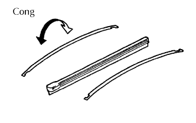
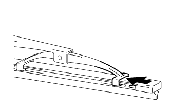
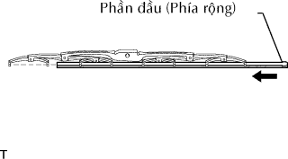
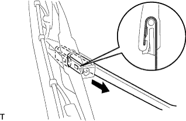

CAO SU GẠT NƯỚC PHÍA TRƯỚC > LẮP RÁP |
| 1. LẮP CAO SU GẠT NƯỚC TRÁI |
|  |
Lắp 2 lưỡi thép đỡ gạt nước vào cao su.
|  |
Lắp cao su gạt nước vào khóa cài của lưỡi gạt nước theo hướng chỉ ra bởi mũi tên trong hình vẽ.
|  |
Gắn phần đầu (phía to hơn) của cao su gạt nước vào khóa càI phía đầu sau của lưỡi gạt nước.
| 2. LẮP LƯỠI GẠT NƯỚC PHÍA TRƯỚC |
|  |
Gắn khóa cài để lắp lưỡi gạt nước.